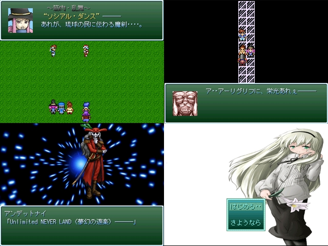

|
| |
 | |
| 【作者名】 | エル |
| 【作者コメント】 | ～時は紀元前～
魔王と呼ばれる“あくま”が人の世を蹂躙し、世界は混沌に 包まれていた。そんな中、勇者と呼ばれる者が魔王を倒し、 世界は平和になった。 ・・・・が。 勇者が倒したはずの魔王は、子孫を残していたのだった。 誰もが絶望した。しかし、第二の魔王は戦うことを好まず、 「人間と共存したい」と自ら願い出た。 そして時を経て、 世界は本当の平和を手に入れたのだった。 が――― |
| 【管理人コメント】 | 果たして魔王の狙いとは？ ちなみに2000体験版製だそうで。 |
|
| |